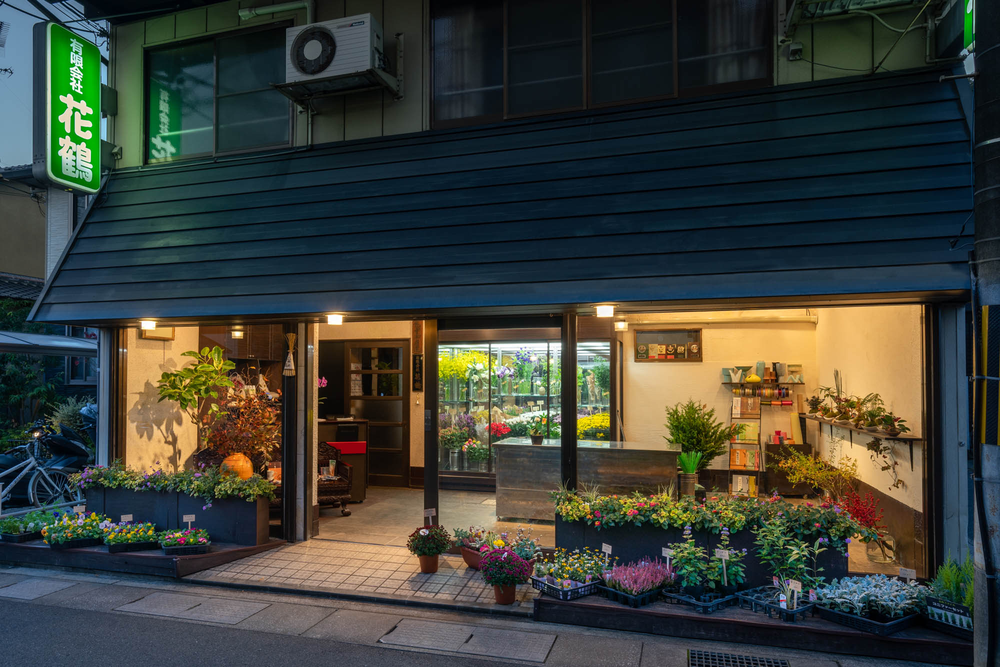
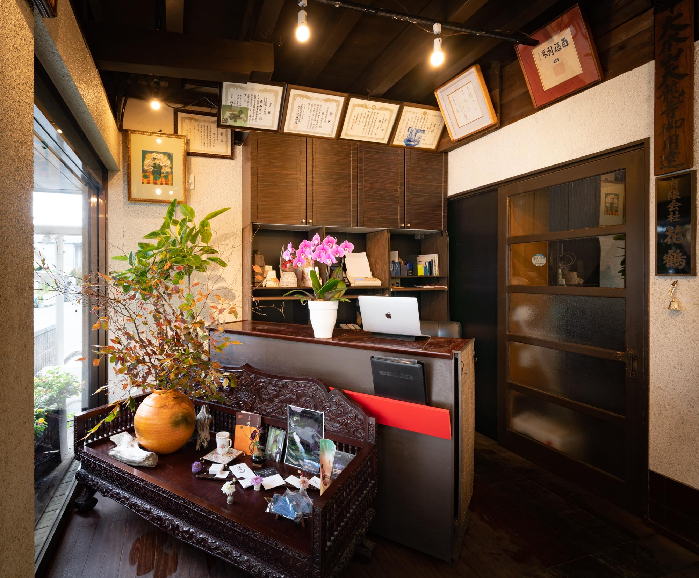
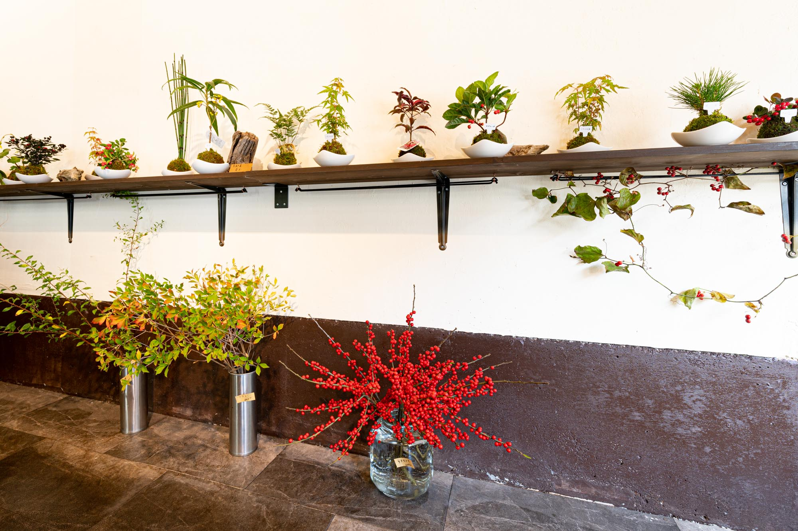

1944年、京都嵯峨嵐山で開業。 料亭、各施設、各種イベント会場での生花装飾を手がけております。
生花販売 
日本の四季を感じていただけるお花、和花を中心にお客さまに提供する事を 心掛けております。 大切な方へのプレゼントに花束、アレンジメントフラワー等 少しこだわりたい方是非ご相談、ご利用ください。 当店で出来る限りの素敵なサプライズ（要予約）お手伝いさせて頂きます。
御榊、仏花、荒神松等に関しましては 毎月14日と月末、定期的に各御家庭へ配達させて頂いております。 御用ありましたら配達地域等含め当店へご相談ください。
当店がありますこの地には由緒あるお寺が たくさんございます。 御先祖様が眠っておられます お墓へ親から子、子から孫へ世代を超えて多くのお客様に 供花をご利用して頂いております。
生花装飾 
各種会場のアレンジメントや花束、ディスプレイ等 お見積もりから相談に伺いますのでお問い合わせください。


アクセス
616-8382 京都市右京区嵯峨天龍寺角倉町6-6
Tel: 075-861-0864
毎日 8:00-20:00 不定休
Email: hanatsuru.arashiyamasaga@gmail.com
Instagram: @yu_hanatsuru